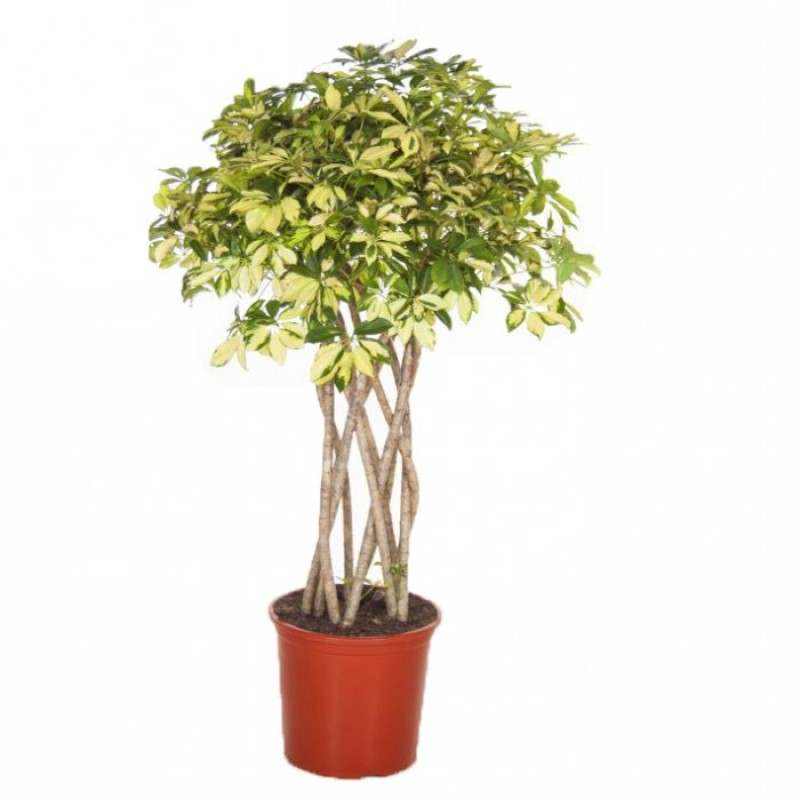

Шефлера
Шеффлера— рід тропічних рослин родини Аралієві. Названий на ім'я німецького ботаніка XVIII століття Якоба Християна Шеффлера.
Представники роду — чагарники, ліани і дерева, які можуть досягати 5 метрів у висоту. Листки на довгих черешках, складні, пальчасті, розсічені на 4-12 частин. З віком стовбур дерева оголюється, листя формується тільки на верхніх частинах пагонів. Суцвіття волотисті або гроноподібні. Рід складає понад 580 видів.
Окремі представники роду культивуються як декоративні рослини і виростають до 2 метрів у висоту. Рослина потребує яскравого розсіяного світла, молоде листя не витримує впливу прямих сонячних променів.
